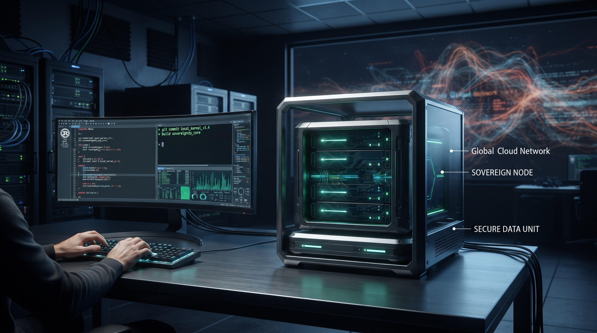

A era da sobriedade técnica: por que a arquitetura voltou a importar na idade da IA
Tem stack que cresce ligeira, mas ninguém sabe explicar,
tem nuvem que cobra sorrindo cada vez que o mês vai virar.
A máquina agora escreve, acelera e faz parecer magia;
mas quem paga a conta descobre que ainda existe arquitetura.
Menos pose na vitrine, mais cuidado no chão:
sobriedade técnica é projeto, não é falta de ambição.
A inteligência artificial tornou mais barato produzir código, mas não tornou barato operar sistemas ruins. Quando a implementação acelera, as decisões de arquitetura ficam mais visíveis: dependências, latência, custo, indisponibilidade e responsabilidade continuam pertencendo ao projeto e ao negócio.
- IA não apaga arquitetura: gerar código mais rápido também expõe decisões ruins mais rápido.
- Nuvem não é vilã: ela faz sentido quando o problema exige elasticidade, colaboração ou serviços que o cliente não deve operar sozinho.
- Complexidade tem preço: cada dependência acrescenta custo de atualização, observabilidade, segurança e suporte.
- Bunker Digital: operação local e offline-first preservam o trabalho essencial quando a conectividade deixa de ser confiável.
- Critério de decisão: escolher a menor arquitetura capaz de atender o negócio, sem esconder os limites e o caminho de evolução.
1. A conta da complexidade finalmente apareceu
Durante anos, a complexidade foi apresentada como sinal automático de maturidade. Microsserviços, múltiplas camadas de renderização, filas, serviços gerenciados e dezenas de integrações entravam no desenho antes de a equipe responder qual problema cada peça resolveria. Em alguns casos, essa arquitetura era necessária. Em outros, ela apenas transformava uma aplicação simples em uma operação cara de explicar e manter.
A conta não aparece apenas na fatura mensal da nuvem. Ela aparece no tempo de onboarding, na atualização de dependências, no diagnóstico de uma falha, na quantidade de ambientes e no número de pessoas necessárias para manter o sistema compreensível. Complexidade é um custo de operação, não apenas uma escolha estética do time de engenharia.
O problema não é usar AWS, Azure, GCP, Kubernetes ou qualquer framework moderno. O problema começa quando a ferramenta vira o ponto de partida e o negócio vira uma justificativa posterior. Arquitetura boa não é a que tem mais componentes; é a que torna explícita a relação entre necessidade, custo e responsabilidade.
2. A IA acelera tanto o acerto quanto o erro
Ferramentas de IA já ajudam a explorar alternativas, escrever testes, documentar código e reduzir o trabalho mecânico. Isso é valioso. O ganho de produtividade, porém, não elimina a necessidade de alguém decidir o que deve ser construído, como será operado e o que acontece quando uma premissa falhar.
Um assistente pode produzir rapidamente uma integração com cinco serviços externos. Ainda será preciso saber se a operação aguenta uma queda, quem possui os dados, como reprocessar uma mensagem, quanto custa cada chamada e como o cliente continua trabalhando sem internet. A velocidade da implementação não responde essas perguntas por conta própria.
O teste que a IA não faz sozinha
Se a nuvem parar por uma hora, o trabalho essencial continua?
Se a resposta for não, a decisão precisa estar explícita no desenho da solução.
3. Soberania local não é rejeição da nuvem
Defender operação local não significa negar a utilidade da nuvem. Serviços remotos são excelentes para colaboração, distribuição, telemetria gerencial, backups e picos de demanda que seriam caros de sustentar no equipamento do cliente. A questão é decidir o que precisa estar sempre disponível no local e o que pode esperar uma conexão.
Um caixa de loja, por exemplo, não deveria deixar de registrar uma venda essencial porque o link caiu. Uma sincronização gerencial pode aguardar. Essa separação entre o fluxo crítico e o fluxo conveniente é uma decisão de arquitetura e também uma decisão de negócio: define qual interrupção é aceitável para quem paga pela solução.
É nesse espaço que o conceito de Bunker Digital se torna útil. Ele não promete isolamento absoluto nem transforma o computador local em uma fortaleza mágica. Ele estabelece uma prioridade: o chão operacional precisa ter dados e capacidades suficientes para continuar funcionando, com sincronização posterior e limites conhecidos.
4. Escolher a stack é escolher uma responsabilidade
Java, Rust, SQLite, uma API remota ou uma fila não são símbolos de virtude ou fracasso. Cada escolha traz consequências de desempenho, contratação, suporte, segurança e evolução. Uma stack enxuta pode reduzir o custo de uma operação pequena; uma plataforma distribuída pode ser a decisão correta quando há escala, equipes separadas e requisitos de disponibilidade que justificam o investimento.
O critério é empírico: medir o fluxo real, testar a falha relevante e acompanhar o custo de manter a decisão ao longo do tempo. O sistema precisa caber não apenas no computador, mas também na capacidade de suporte da empresa e no orçamento do cliente.
| Pergunta | Evidência necessária |
|---|---|
| O que precisa funcionar sem rede? | Fluxo operacional testado em modo offline. |
| O que pode ser remoto? | Atraso aceitável e política de reprocessamento. |
| A complexidade se paga? | Custo total, suporte e valor operacional medidos. |
| Como evoluir sem reescrever tudo? | Limites de domínio e caminho de migração documentados. |
5. Engenharia B2B começa pela realidade do cliente
Em uma empresa B2B pequena, a promessa não pode ser maior que a capacidade de entrega. O cliente não compra uma demonstração de arquitetura; ele compra continuidade de operação, clareza de suporte e um caminho de crescimento que não esconda os custos.
Isso muda a forma de apresentar um produto. Em vez de anunciar uma plataforma que faz tudo, a comunicação pode dizer qual recorte está pronto, quais limites existem e qual evolução depende de outro plano ou de outro momento. Transparência não é uma desculpa para entregar pouco. É uma forma de impedir que o cliente tome uma decisão baseada em uma capacidade que nunca foi garantida.
A maturidade aparece quando a equipe consegue dizer “não precisamos desta peça agora” sem confundir simplicidade com improviso. Um sistema local, com banco SQLite e sincronização bem delimitada, pode ser mais responsável para uma operação do que uma arquitetura distribuída que ninguém consegue auditar no dia a dia.
6. A sobriedade como vantagem competitiva
A próxima fase da tecnologia não será definida apenas por quem gera mais código. Será definida por quem consegue transformar velocidade em sistemas que continuam funcionando, podem ser explicados e não transferem todo o risco para o cliente.
A IA veio para ficar, mas ela é um motor. A direção continua sendo humana: escolher o que merece complexidade, medir o que foi prometido e preservar o fluxo que mantém o negócio de pé. A sobriedade técnica não é voltar ao passado. É usar o presente sem deixar que o presente escolha a arquitetura sozinho.
7. O convite
Antes de adicionar mais uma ferramenta ao projeto, vale fazer quatro perguntas: qual problema ela resolve, qual custo recorrente introduz, como a operação se comporta durante uma falha e quem será responsável por mantê-la daqui a dois anos?
As respostas talvez levem à nuvem, a uma fila ou a uma arquitetura distribuída. Talvez levem a uma aplicação local pequena, com sincronização posterior. O ponto não é escolher uma ideologia tecnológica. É escolher conscientemente, com evidência suficiente para que a decisão continue fazendo sentido depois que o hype passar.
Dicionário de Termos Técnicos
Para facilitar a leitura, organizamos os conceitos utilizados no artigo:
- Offline-first: abordagem em que as funções essenciais continuam disponíveis mesmo sem conexão.
- Bunker Digital: filosofia de operação que prioriza dados, regras e capacidades críticas no ambiente local do cliente.
- Complexidade operacional: esforço adicional para implantar, observar, atualizar, proteger e dar suporte a um sistema.
- Sincronização posterior: envio de dados locais para serviços remotos quando a conectividade volta a estar disponível.
- Stack: conjunto de linguagens, frameworks, bibliotecas, bancos e serviços usados para construir uma solução.
- IA generativa: tecnologia capaz de produzir texto, código ou outros artefatos a partir de instruções e contexto.
Hashtags
Contato
- Site institucional: www.caracore.com.br
- Ecossistema: www.caracore.com.br/ecosistema.html#roadmap
- E-mail: suporte@caracore.com.br
- LinkedIn: Cara Core Informática
Use IA para acelerar o trabalho, mas mantenha custo, falhas e responsabilidade visíveis no desenho da solução.
Artigo publicado em 18 de junho de 2027
© 2027 Cara Core Informática. Todos os direitos reservados.